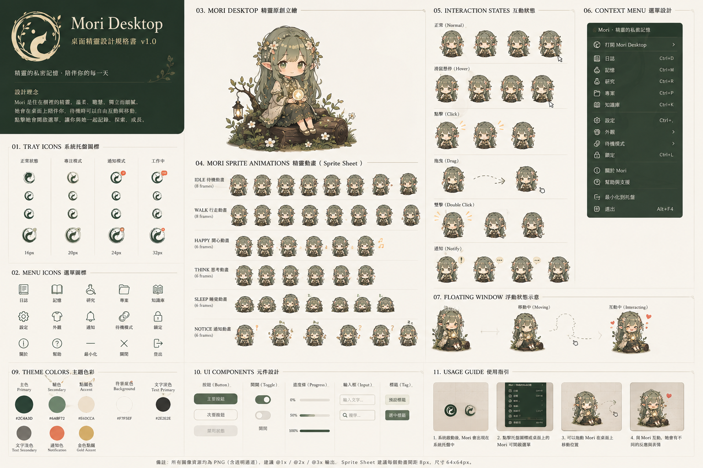

Mori
DESIGN BOOK · v1.0
系統匣 icon 規範 + 7 個 sprite 表情 + menu icon 庫 + interaction states。
讓 Mori 在 panel 上是「會呼吸的森林精靈」,不是死木頭按鈕。

系統匣的「app icon」永遠是 logo 圓徽,不是 sprite 表情。原因:
docs/design/mori-logo.png — 從 brand sheet logo 區自動 crop + 去米色背景crates/mori-tauri/icons/icon.png + 16/32/64/128/256 — Tauri bundle 輸出系統匣有些桌面環境(GNOME / macOS dark panel)會自動把 icon 染成 monochrome。 要對應:
#2C4A3D(淺底 panel)#E6DECA(深底 panel)
Floating widget 用 6 個 sprite 表情,tray dynamic 也用同一套(未來 5O-2 啟用)。
Sprite 在public/floating/跟docs/sprites/都有一份。

mori-idle

mori-recording

mori-thinking

mori-done

mori-error

mori-sleeping
Right-click / left-click tray icon 出現的選單,目前實作在 main.rs:
| 項目 | 動作 |
|---|---|
| 顯示 Mori | show main window + 把 floating set_always_on_top |
| 隱藏 | hide main window |
| 對話模式 | Mode::Agent |
| 語音輸入模式 | Mode::VoiceInput |
| 休眠(關麥克風) | Mode::Background |
| Voice Profile ▸ | 掃 ~/.mori/voice_input/ 列出全部 .md(5K-2) |
| Agent Profile ▸ | 掃 ~/.mori/agent/ 列出全部 .md |
| 重新開始對話 | 清空 conversation history |
| 離開 | app.exit(0) |
| 狀態 | tray icon | floating sprite | aura / 效果 |
|---|---|---|---|
| idle | logo(靜態) | mori-idle | 呼吸 5s + 微光暈 |
| recording | logo + 紅點(planned) | mori-recording | 水波紋天空藍 ring + 音量光暈 + ripple |
| thinking | logo + 旋轉點(planned) | mori-thinking | 森林綠雙環 spin + 葉間光斑 breathe |
| done | logo(短暫綠光) | mori-done | 柔暖光暈 + 微 bounce |
| error | logo + 黃 badge(planned) | mori-error | 微紅 + 抖一下 |
| sleeping | logo(灰) | mori-sleeping | 淡化 + 下沉 |
Mori 主動通知時(背景排程提醒 / 失敗 / etc.):
notice 表情 0.6s 後恢復(planned, 5O-2)tauri-plugin-notification)送原生 notifcrates/mori-tauri/src/main.rs setup 區:TrayIconBuilder 建 tray、menu、event handlercrates/mori-tauri/icons/ — 6 size icon + tray/ dir 含 sprite 32/64crates/mori-tauri/src/portal_hotkey.rs ensure_desktop_file — 寫 .desktop entry,StartupWMClass=Mori-tauri 對齊實際 WM_CLASS